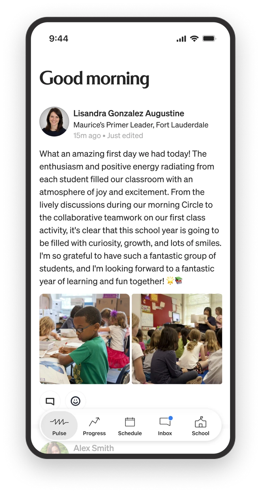
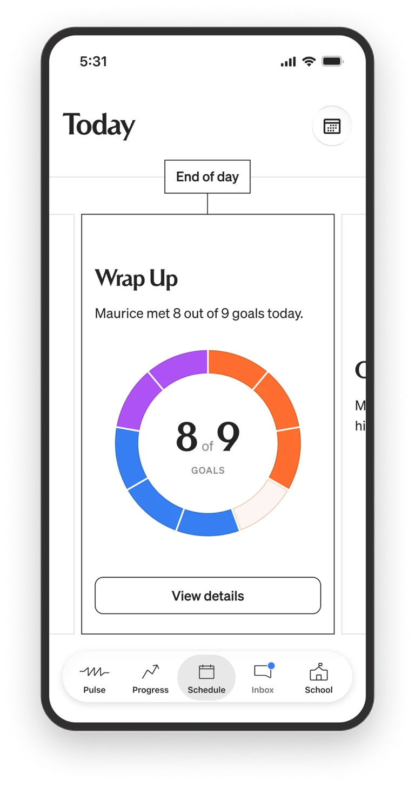
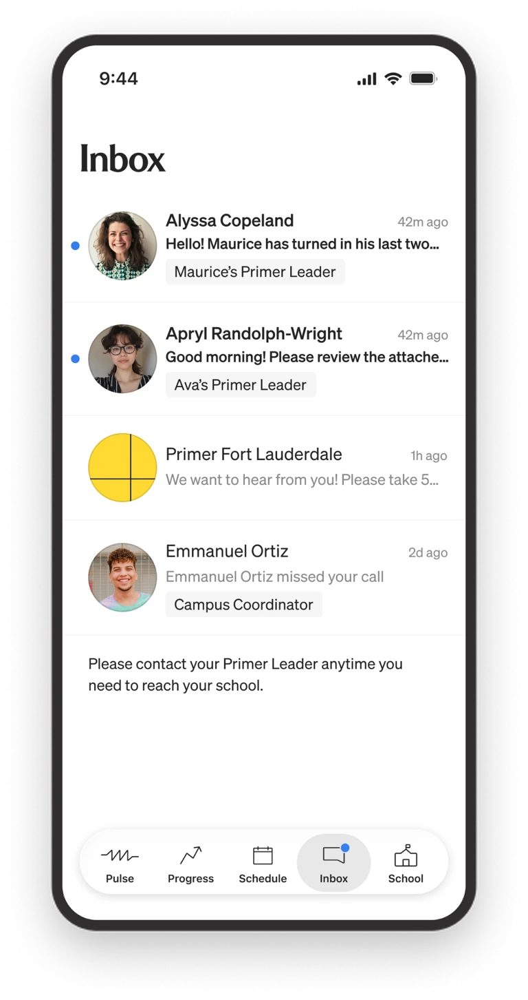
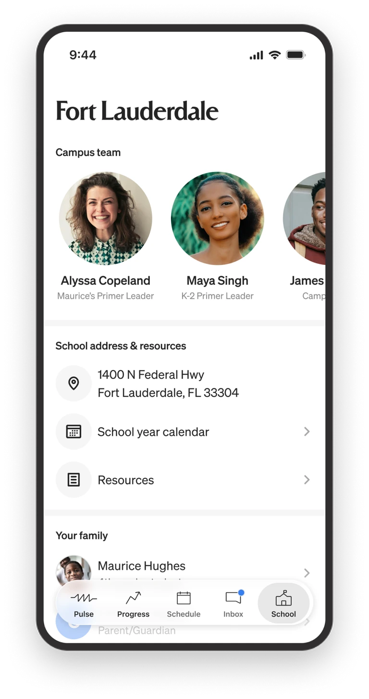

Primer
From scattered tools to one platform for teachers, students, and parents
When I joined, Primer had just pivoted from a supplemental after-school platform to full-time, in-person K–8 microschools. The product hadn't caught up: an MVP held together by external tools, with a limited experience for teachers, students, and parents.
Over three years I led UX and Product Design as Primer scaled, directing a small team while doing the core design work myself. I overhauled the design system and designed the experiences that replaced them: one platform where teachers teach, students learn, and parents stay informed, coherent across web, mobile web, native, and the classroom.
Oct 2023 – Jun 2026
Led all design
MVP to full platform
Designed end-to-end
6
18
Campuses
4 surfaces
One design system

I designed a television display that lets a teacher read the whole room from anywhere in it: which class each student is in, time left in the block, progress on daily and weekly goals.
The teacher problem
From classroom visits and teacher feedback, the fix was clear: put every tool a teacher needs in one place, so the day isn't spent switching tabs and reconciling five apps to see where a class stands.
Outcomes
- 12 disjointed tools consolidated into a single platform
- LLM review replaces a manual approval queue, so teachers author project-based courses independently
- Zoom replaced with a purpose-designed classroom, eliminating a recurring per-seat cost across every campus
- One design system and consistent UX patterns across every surface

Teachers see the whole class at a glance. Each student's daily and weekly goal progress is visible in one roster, with on-track and off-track states readable at a scan.
One view of every student's progress
Before I undertook the goals design, progress was scattered across learning apps, each with its own scoreboard. Khan counts points, IXL counts skills, Reflex counts minutes, Newsela counts quiz scores, independent reading counts minutes read. To see where a class stood, a teacher opened all five and reconciled five different pictures in their head.
I designed a dashboard that pulled it into a single view. Today's goals were always visible, the thing teachers needed to see most. A teacher can open any student's app goals to see domain-level mastery and a lesson-by-lesson history, scores and time included, without ever opening the source apps. Green meant on track, red meant off track.

Opening a student's goals reveals domain-level mastery and a lesson-by-lesson history, scores and time included, pulled from the source apps so a teacher never has to leave the platform.
The one goal teachers build themselves, reviewed by an LLM
Most of those goals came from outside apps. One didn't. Project based learning, or Pursuits, was Primer's own, core to how it taught, and it sat in the same goal system as Khan and IXL, alongside everything else a student worked toward. The difference was that teachers authored these themselves, and before the platform supported it, they wrote courses in docs and submitted them to a person for review. That didn't scale.

Teachers build their own project based learning classes inside the platform, setting the academic focus and structure instead of stitching materials together from outside tools.
I designed a class-builder where teachers create a course and get feedback in the same place. A teacher works through foundation planning and instructional design, then submits for review. Instead of routing to a person, an LLM checks whether the academic focus, the learning goal, and the demonstration of learning are in sync, and returns structured feedback on each: aligned or not, with a note on what to revisit. The teacher revises and resubmits.
The decision that mattered most was how the LLM's feedback behaved. It advises, it doesn't block. A teacher can act on a flag or move ahead without it, so the model works as a second read, not a gate. I designed the flow and the loop, not the model itself.

On submit, an LLM checks the course against the requirements for the categories the teacher chose and returns specific gaps to address, so revisions are targeted rather than guesswork.
A classroom made for teaching, not meetings
Goals set what students work toward. The classroom is where a teacher actually works with them, and that ran on Zoom, which cost more at network scale and was made for meetings, not teaching. It had no concept of a class roster, a lesson, or the small tools a teacher reaches for mid-instruction. I designed Prism, a custom virtual classroom shaped around how a class actually runs. Teacher tools include small-group instruction with custom class layouts, class and individual student chats, screen sharing, and controls to manage class noise.

Custom tools allow a teacher to manage the classroom. These include chatting with students individually or as a group, screen sharing, and creating custom class layouts for small group work and 1:1 huddles.
Keeping parents in the loop
The last piece of a teacher's day reached outside the classroom. Pulse gave parents a regular window in. I designed it as a per-class feed: teachers post photos and short updates, and parents see them on the native app. Teachers can also post field trip reminders, holiday schedules, and testing dates. Parents respond with emojis or comments, giving the feed a two-way dialogue. A regular view into what their kids were doing helped build trust with parents.

A custom feed allowed teachers to easily communicate to the families of the entire class. Parents received a push notification in the native app when new posts were ready.
What changed for teachers
Everything a teacher needed lived in the platform. Each of these replaced a tool rather than adding one, except the class-builder, which added a capability the platform never had. The teacher experience also included attendance, grading, literacy class tools, and reporting. One centralized place to run a classroom, not a collection of stitched together tools.
A day with no map
The student problem
The day had a structure, but nothing in the platform carried it. There was a schedule, but a static one. A student had to check the time, find the right block, click into it, then work out which app to open. That's a lot of mental load before any learning starts, and goals only added to it, scattered across Khan Academy, IXL, and everything else. So students leaned on teachers for basic direction all day. Every "what do I do now?" was a question a teacher had to stop and answer. Instead of working with students on where they needed help, teachers spent their time redirecting them.
To give students the autonomy to know what to do and when, I redesigned the experience around a single question: what do I need to do right now? The day is sequenced and moves with the clock, so the current class is always the thing in focus, and students move through it on their own instead of waiting to be told.
What do I need to do right now?
The schedule had to know what time it was. Once it did, it could carry the day instead of the student carrying it. The student schedule was designed block by block, from opening circle to math class to breaks, and the current block stays highlighted as the day moves through it. Whatever's in session brings its apps with it. A student doesn't check the time and go hunting for their place in it.
Students can go back to a class that's passed to finish work they didn't get to. They can't jump ahead to one that hasn't started. The day only offers what's happening now, which is what lets a student follow it without asking, "What do I need to do now?"

A time-based schedule lays out the full day block by block, from opening circle to class to breaks, so students move through it on their own instead of asking what's next.
Every goal in one place
Goals lived in five apps, each with its own scoreboard. Khan counts points. Reflex counts minutes. IXL counts skills. Newsela counts quiz scores. Independent reading counts minutes read. The dashboard puts all five in one view, with the same card, the same daily and weekly bars, and each app's goal in its own units. A student sees what to hit today and how the week is tracking without translating between five systems.
On top of that sits one currency the student actually earns: a coin for meeting a daily goal. Not points, not a score, just one coin per goal met, adding up over time. The teacher opens a reward shop at midday where students spend them on pencils, erasers, custom cursors and fonts. Keeping the shop closed the rest of the day means the coins reinforce the work without competing with it.

One dashboard answering what's happening now and what to hit today: the current activity, what's next, and the daily and weekly goal for every learning app in a single view.

Independent reading is the one goal a student logs themselves. It sits alongside the app goals in the same card, tracked the same way, with the book they're reading right there.
Designed for Chromebooks
The same classroom had to work on two very different screens. Teachers ran Prism on MacBook Airs. Students ran it on Chromebooks, short screens with far less accurate color. I tested the designs on a Chromebook. Rather than shrink the teacher layout down, I designed the student view for the screen it actually lived on, keeping video, chat, and the current activity usable in a fraction of the vertical space.

Students can chat with their teacher directly, raise their hand and break into small groups.
What changed for students
Students had guidance. They knew where to be and when, they knew what was expected of them each day and each week, and they earned coins along the way. Together that gave them the autonomy to answer two questions on their own: what should I be doing right now, and what am I working toward. Which frees teachers to help the students who need it.
No visibility into their child's day
The parent problem
Parents had almost no visibility into what their kids were actually doing at school. What did my student do today? Are they making progress? How do I reach the teacher? Where's the field trip permission slip? Most schools answer those questions with a mishmash of bolted-on, white-label tools that make a parent feel more disconnected, not less. At Primer, the whole relationship between a parent and their child's education was running through pieces that were never designed to work together.
A personal start from the first step
The connection had to start at enrollment, which is far more than a form: families move through admissions interviews, learning profiles, tuition, and enrollment documents. Before the redesign, admissions reps spent much of that time chasing families by hand for missing paperwork.

A personalized step-by-step checklist of what the family needs to accomplish to enroll. It starts with the first item checked and they have access to their admissions rep through the whole process.
I designed a fully self-service enrollment experience that guided parents through every step, family information, learning profiles, financial details, agreements, and payment, in one responsive flow, while keeping each family's admissions representative present throughout instead of replacing them with a form. Automating the paperwork let reps spend less time collecting documents and more time helping families make the decision itself.

A message welcomes new families when they are officially enrolled and transitions them into onboarding.
A native app that answered the everyday questions
Once a family enrolled, staying connected day to day needed more than mobile web could give. I designed a native iOS and Android app that became the primary touchpoint between parents and the school, and I designed it around the questions parents actually ask. Pulse shows what happened in class today. Progress shows whether their child is on track. A direct inbox reaches the teacher and support staff without hunting for contact info.


The Pulse feed was the primary way parents stayed on top of what was happening at school. They could also see a live view of their child's day and the goals met by end of day.
Schedules, school details, and the field trip permission slip all live where a parent would look for them. Mobile web stayed for quick, incidental checks, but the daily, engaged experience lived in native, where deep links, sessions, and notifications actually work. Instead of piecing information together from disconnected tools, a parent opens one app and sees their child's day.


An inbox with direct access to teachers and campus staff and easy access to all the school's resources means parents don't have to search for the information they need.
The shift: from the outside in
Every parent touchpoint, from the first enrollment step to the end-of-day wrap-up, closed the gap between a parent and the schoolwork their child was doing. Parents went from stitching together a picture out of disconnected tools to seeing their child's day clearly, in one place designed for exactly that.
The Results
When I joined, Primer was a rough MVP running on borrowed tools, with no real design foundation under it. Three years later it was one platform, teachers, students, and parents each with an experience designed for how they actually work, coherent across web, mobile web, native, and the classroom, all running on a single design system I created from scratch. That foundation is in part what let Primer scale thirty times over without the product coming apart. I led the design of all of it, directing a small team while doing the core work myself, and left the company with a design practice it didn't have when I arrived.